Deep Learning Visualization
DS-GA 3001 - Fall 2026
NYU Center for Data Science
2026-10-27
Deep Learning Fundamentals
Agenda
Goal: Grasp foundational DL concepts essential for understanding network visualization techniques.
Deep Learning Terminology and Foundations
Linear Models and Loss Functions
Shallow Neural Networks and Activation Functions
Deep Neural Networks and Composition
Interactive Visualization Tools
Acknowledgments:
Materials adapted from:
- Prince, S. J. D. (2023). Understanding Deep Learning. MIT Press.
Understanding Deep Learning
Understanding Deep Learning by Simon J.D. Prince
Published by MIT Press, 2023
Available free online: https://udlbook.github.io/udlbook
Why this book?
- Modern treatment (includes transformers, diffusion models)
- Excellent visual explanations
- Free and accessible
- Strong mathematical foundations with intuitive explanations
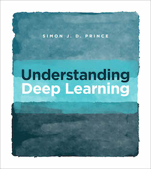
Prince, S. J. D. (2023). Understanding Deep Learning. MIT Press.
Deep Learning Terminology
The Supervised Learning Framework:
\[y = f[x, \Phi]\]
| Symbol | Meaning | Example |
|---|---|---|
| \(y\) | Prediction (model output) | House price: $450,000 |
| \(x\) | Input (features) | Square footage: 2000 sq ft, Bedrooms: 3 |
| \(\Phi\) | Model parameters (weights, biases) | Millions of numbers learned from data |
| \(f[\cdot]\) | Model function (architecture) | Neural network with multiple layers |
Key Insight: Deep learning learns the parameters \(\Phi\) from training data pairs \(\{x_i, y_i\}\) to minimize prediction errors.
The Learning Process
Training Data:
Pairs of inputs and outputs: \(\{x_i, y_i\}\)
Loss Function:
Quantifies prediction accuracy: \(L[\Phi]\)
- Lower loss = better fit to training data
- Guides parameter updates during training
Goal:
Find parameters \(\Phi\) that minimize \(L[\Phi]\)
\[\Phi^* = \arg\min_{\Phi} L[\Phi]\]
Generalization:
Test on separate data not seen during training
The Challenge:
We don’t want to just memorize training data!
We want models that generalize to new, unseen examples.
→ This is why we split data into train/validation/test sets.
Linear Models: Building Intuition
1-D Linear Regression Model
The simplest supervised learning model:
\[y = f[x, \Phi] = \Phi_0 + \Phi_1 x\]
- \(\Phi_0\): Intercept (bias term)
- \(\Phi_1\): Slope (weight)
- Only 2 parameters to learn
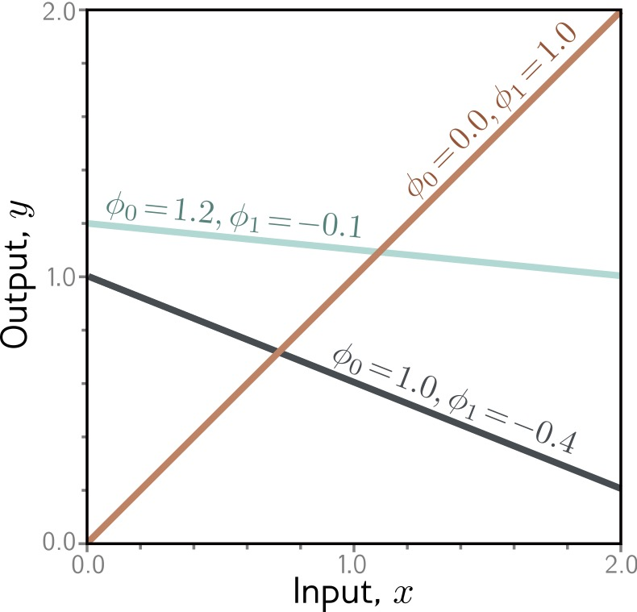
Prince, S. J. D. (2023). Understanding Deep Learning. Chapter 2: Supervised Learning.
Linear Regression: Measuring Error
How do we quantify “good fit”?
Loss Function: Sum of squared errors
\[L[\Phi] = \sum_{i=1}^{N} (y_i - f[x_i, \Phi])^2\]
Vertical distance from each data point to the line → squared → summed = total error
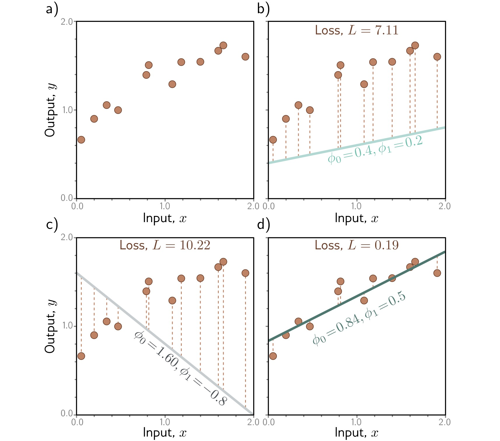
Prince, S. J. D. (2023). Understanding Deep Learning. Chapter 2: Supervised Learning.
Loss Surface
Every point on the surface is one choice of parameters; we want the lowest point.
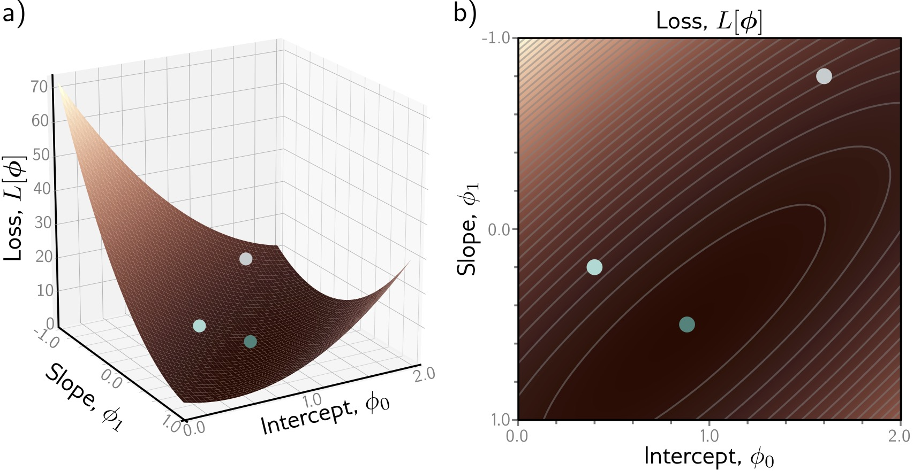
Prince, S. J. D. (2023). Understanding Deep Learning. Chapter 2: Supervised Learning.
Loss Surface: What to Look For
- X-axis: Intercept \(\Phi_0\)
- Y-axis: Slope \(\Phi_1\)
- Height / color: Loss \(L[\Phi]\)
Goal: Find the lowest point (the darkest region in panel b)
Key Observations:
- Single global minimum - bowl-shaped surface
- Smooth - we can use gradients to navigate
- Convex - any path downhill leads to optimum
For linear models, optimization is easy! Deep networks have much more complex loss landscapes…
Optimization: Gradient Descent
Iteratively move downhill, opposite to the gradient.
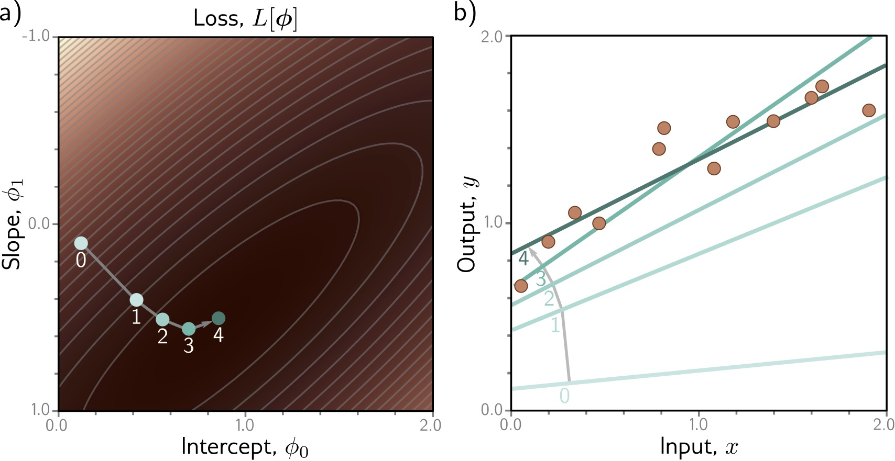
Prince, S. J. D. (2023). Understanding Deep Learning. Chapter 2: Supervised Learning.
Gradient Descent: The Algorithm
How do we find the minimum?
- Start at random position
- Compute gradient (slope direction)
- Take small step opposite to gradient
- Repeat until convergence
\[\Phi_{new} = \Phi_{old} - \alpha \nabla L[\Phi]\]
\(\alpha\) = learning rate
- Too large → overshoot and diverge
- Too small → very slow convergence
Shallow Neural Networks
From Linear to Non-linear
Linear models are limited - they can only learn straight lines!
Solution: Add non-linearity through activation functions
Transform linear combinations with a non-linear function → enables learning complex patterns
Shallow Neural Network (1 hidden layer):
\[y = f[x, \Phi] = \Phi_0 + \sum_{i=1}^{3} \Phi_i \cdot a[ \Theta_{i0} + \Theta_{i1} x]\]
| Component | Description | Count |
|---|---|---|
| \(\Theta_{ij}\) | First layer parameters | 6 parameters |
| \(\Phi_i\) | Second layer parameters | 4 parameters |
| \(a[\cdot]\) | Activation function | Non-linearity! |
Total: 10 parameters (vs 2 for linear model)
Activation Functions: ReLU
ReLU (Rectified Linear Unit): the most popular activation function
\[a[z] = \max(0, z) = \begin{cases} z & \text{if } z > 0 \\ 0 & \text{if } z \leq 0 \end{cases}\]
Why ReLU?
- Simple: easy to compute and differentiate
- Efficient: avoids vanishing gradient problem
- Sparse: many activations are exactly zero
- Biological: neurons either fire or they don’t
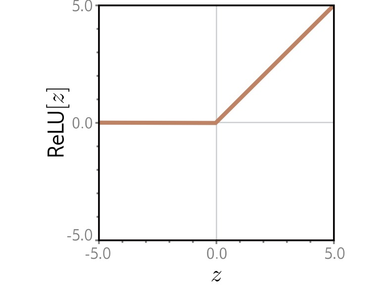
Prince, S. J. D. (2023). Understanding Deep Learning. Chapter 3: Shallow Neural Networks.
Building Intuition: Composing ReLUs
The same 3-hidden-unit network, with different parameters, produces three different piecewise-linear functions.
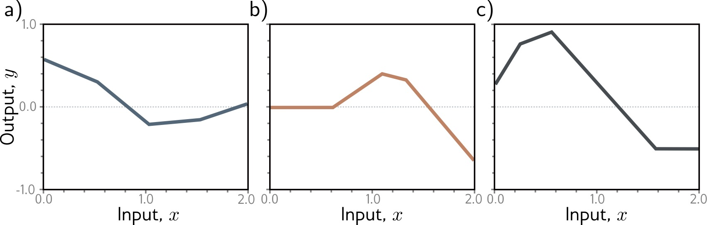
Prince, S. J. D. (2023). Understanding Deep Learning. Chapter 3: Shallow Neural Networks.
Composing ReLUs: Step by Step
Each hidden unit:
- Computes linear function of input
- Applies ReLU → bent line
- Gets weighted and summed
Combining multiple units:
- Different slopes and bends
- Sum creates complex shapes
- More units → more flexibility
Neural Network Computation
Step-by-step: how a shallow network processes an input
Input \(x\) (left) enters the network
Each hidden unit computes: \(h_i = a[\Theta_{i0} + \Theta_{i1} x]\)
Weighted combination: \(y = \Phi_0 + \sum_i \Phi_i h_i\)
Final output \(y\) (right)
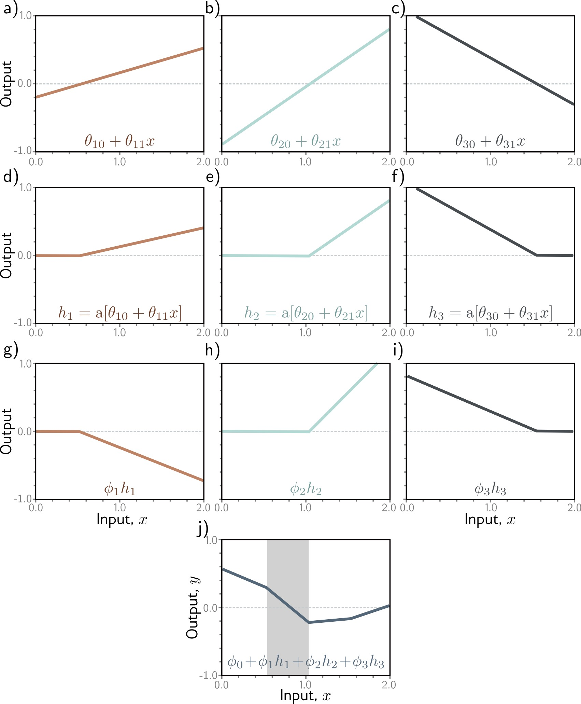
Prince, S. J. D. (2023). Understanding Deep Learning. Chapter 3: Shallow Neural Networks.
Neural Network Diagram
The standard picture: inputs feed hidden units, which feed the output.
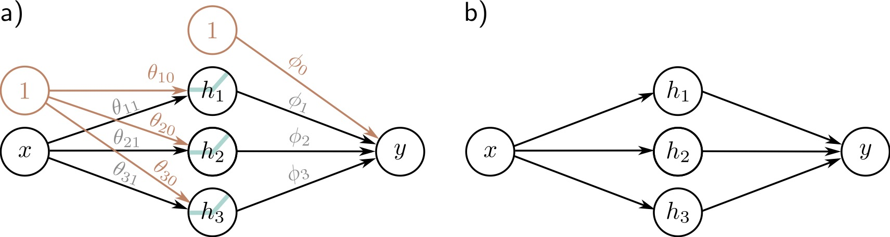
Prince, S. J. D. (2023). Understanding Deep Learning. Chapter 3: Shallow Neural Networks.
Network Diagram: Components and Terminology
Components:
- ⚫ Input layer: Raw features
- 🔵 Hidden layer: Learned representations
- ⚫ Output layer: Prediction
- → Connections: Weighted parameters
Terminology:
- Hidden units/neurons: Computed values in middle
- Pre-activations: Before ReLU
- Activations: After ReLU
- Fully connected: Every unit connects to all units in next layer
Universal Approximation Theorem
A shallow network with enough hidden units can approximate any continuous function.
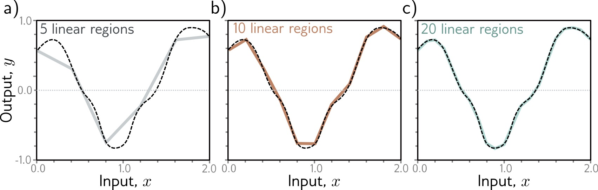
Cybenko, G. (1989). Approximation by superpositions of a sigmoidal function. Mathematics of Control, Signals and Systems, 2(4), 303-314.
Universal Approximation: The Theorem and Its Limits
Theorem (Cybenko 1989, Hornik 1991):
A shallow neural network with enough hidden units can approximate any continuous function to arbitrary accuracy on a compact domain.
But…
- May require exponentially many hidden units
- Doesn’t tell us how to find the parameters
- Deep networks are often more efficient
Cybenko, G. (1989). Approximation by superpositions of a sigmoidal function. Mathematics of Control, Signals and Systems, 2(4), 303-314.
Deep Neural Networks
Why Go Deep?
Deep networks compose simple transformations to build complex representations
Shallow network limitations:
- Requires many hidden units
- Doesn’t exploit structure
- Inefficient representation
Deep network advantages:
- Hierarchical learning
- Compositional structure
- Parameter efficiency
- Feature reuse across layers
Intuition from vision:
Layer 1: Edges, colors
↓
Layer 2: Textures, simple shapes
↓
Layer 3: Object parts
↓
Layer 4: Object categories
Each layer builds on previous representations!
Composing Networks
Building deep networks: stack multiple hidden layers
Each layer:
\[h^{(k)} = a[W^{(k)} h^{(k-1)} + b^{(k)}]\]
- \(h^{(k)}\): Activations at layer \(k\)
- \(W^{(k)}\), \(b^{(k)}\): Parameters for layer \(k\)
- Composition: \(f = f_K \circ f_{K-1} \circ \ldots \circ f_1\)
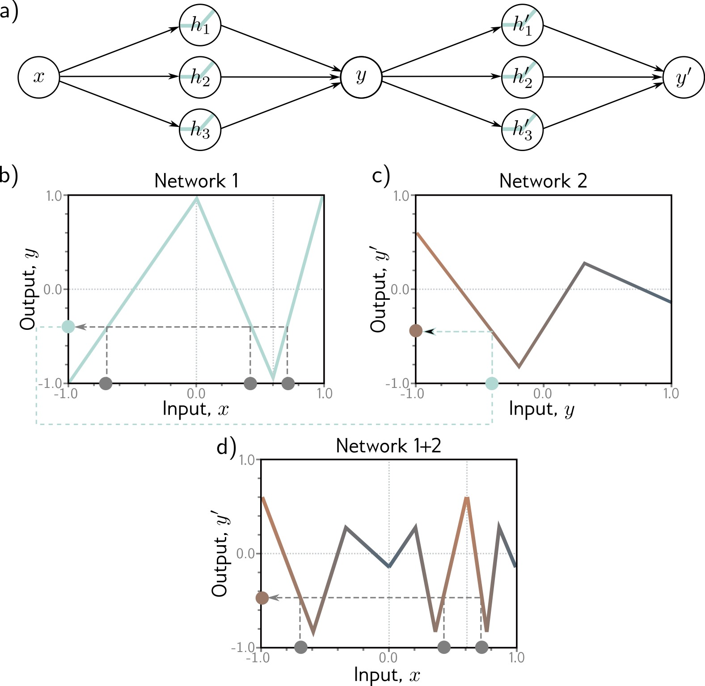
Prince, S. J. D. (2023). Understanding Deep Learning. Chapter 4: Deep Neural Networks.
How Deep Networks Transform Space
Each layer bends and folds the representation space, pulling intertwined classes apart.
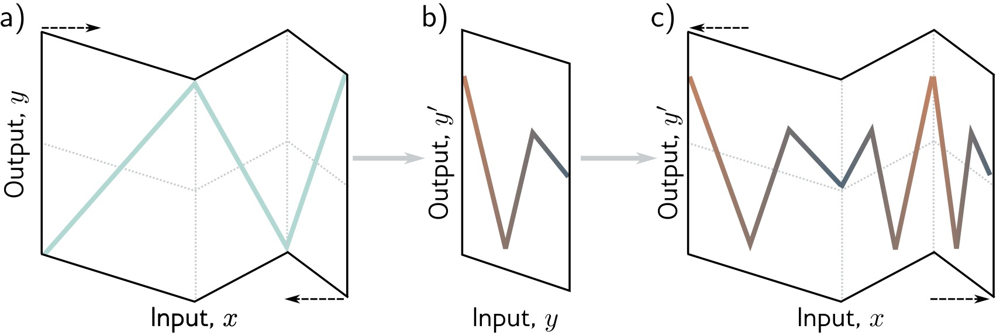
Prince, S. J. D. (2023). Understanding Deep Learning. Chapter 4: Deep Neural Networks.
Folding Space: Layer by Layer
Layer 1:
Stretches, rotates, bends space with ReLU
Layer 2:
Further transforms the already-bent space
Result:
Complex folding of input space
→ Can separate classes that were originally intertwined
Two Hidden Layers
The second layer operates on intermediate representations, not on raw inputs.
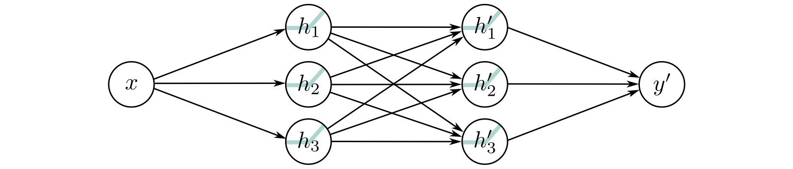
Prince, S. J. D. (2023). Understanding Deep Learning. Chapter 4: Deep Neural Networks.
Two Hidden Layers: Key Difference from Shallow Networks
- First layer creates intermediate representations
- Second layer operates on those representations, not raw inputs
- Can capture compositional structure
Example: First layer detects edges, second layer combines edges into shapes
K Hidden Layers: Deep Architecture
Modern deep learning: many layers stacked, each building on the last.
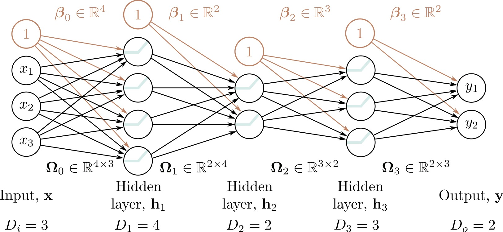
Prince, S. J. D. (2023). Understanding Deep Learning. Chapter 4: Deep Neural Networks.
Deep Network Characteristics
- Input layer: Raw features (e.g., pixel values)
- Hidden layer 1: Low-level features (edges, textures)
- Hidden layer 2: Mid-level features (parts, patterns)
- Hidden layer K: High-level features (concepts, objects)
- Output layer: Final prediction
Modern architectures: ResNet (152 layers), GPT-3 (96 layers), Vision Transformers (24+ layers)
Interactive Visualization Tools
TensorFlow Playground
Interactive tool for understanding neural networks · https://playground.tensorflow.org
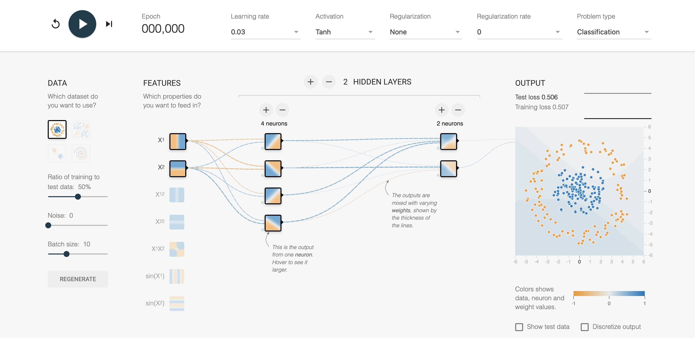
Smilkov, D., & Carter, S. (2016). TensorFlow Playground. Google Brain.
CNN Explainer
Interactive visualization of Convolutional Neural Networks · https://poloclub.github.io/cnn-explainer/
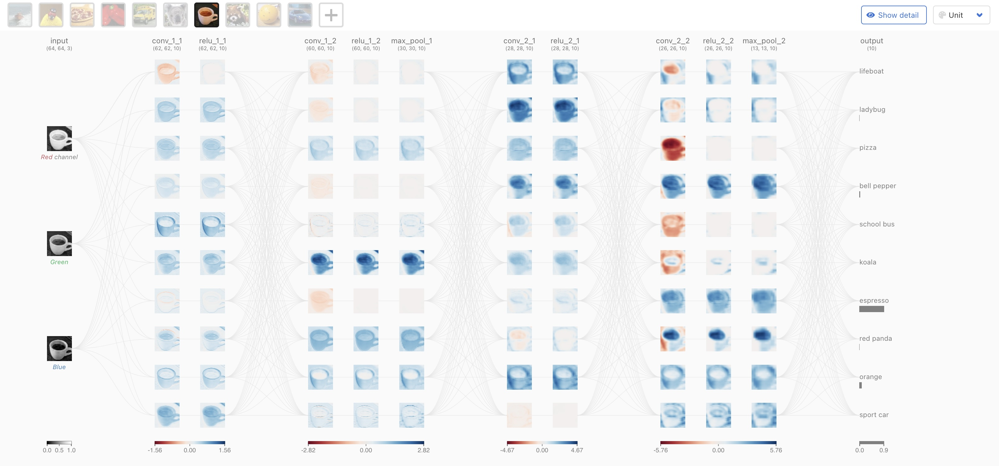
Wang, Z. J., et al. (2020). CNN Explainer: Learning Convolutional Neural Networks with Interactive Visualization. IEEE VIS.
Further Exploration
Recommended interactive visualizations and resources:
Neural Network Visualization:
Distill.pub: The Building Blocks of Interpretability Comprehensive visual explanations
TensorFlow Embedding Projector Explore high-dimensional embeddings
ML4A: Looking Inside Neural Nets Interactive tutorials and visualizations
Understanding Deep Learning:
Free online textbook with: - Interactive Python notebooks - Video lectures - Extensive visualizations - Modern coverage (transformers, diffusion models)
Summary: Deep Learning Foundations
Key Takeaways:
Supervised Learning: Learn parameters \(\Phi\) from data pairs \(\{x_i, y_i\}\) to minimize loss \(L[\Phi]\)
From Linear to Non-linear: Activation functions (ReLU) enable learning complex patterns
Shallow Networks: Single hidden layer can approximate any function (Universal Approximation Theorem)
Deep Networks: Multiple layers learn hierarchical representations more efficiently
Geometric View: Networks transform input space through non-linear folding to separate classes
Next lectures: We’ll explore specialized visualizations for CNNs, attention mechanisms, activation analysis, and network interpretability
Next Week: Visualization for NLP and LLMs
Preview of upcoming topic:
Language models are deep networks too
- NLP basics and text representations
- General text visualization
- Visualizing RNNs and attention
- Visualizing large language models
Why it matters:
Today’s building blocks (layers, activations, learned representations) are what transformers are made of.
Next week we ask how to see what a language model is doing.